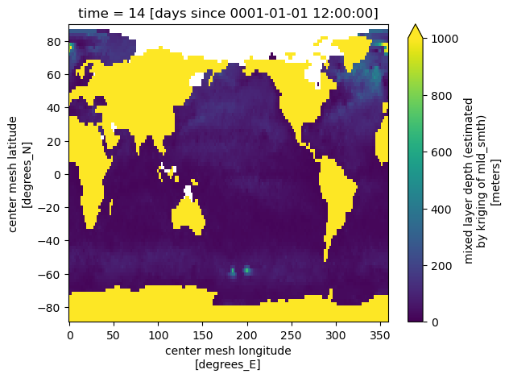
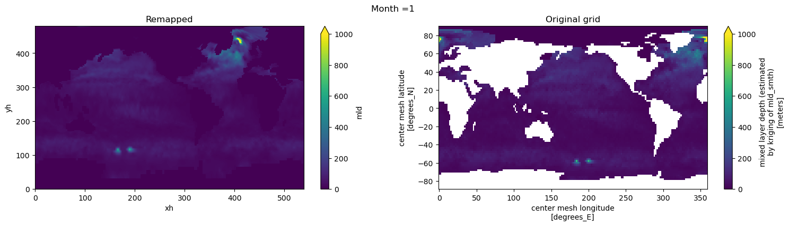
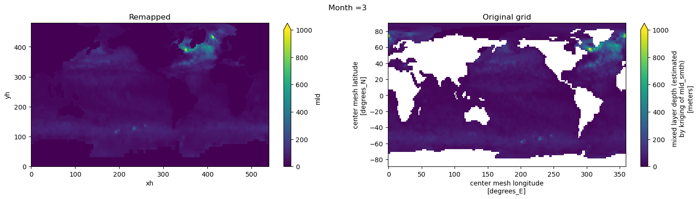
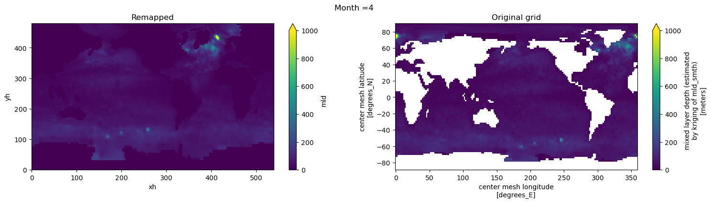
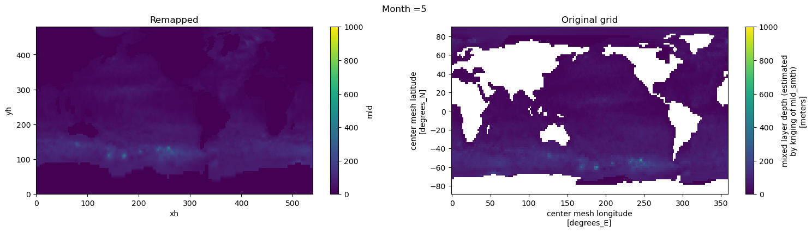
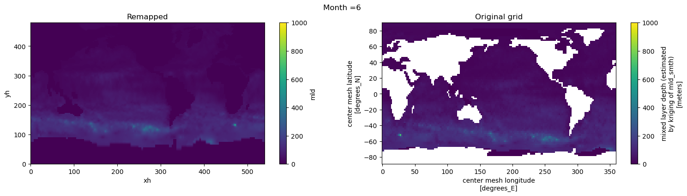
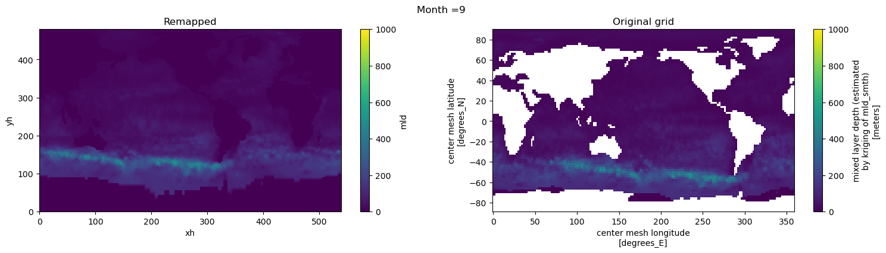
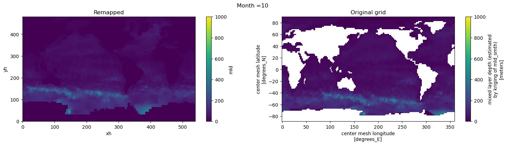
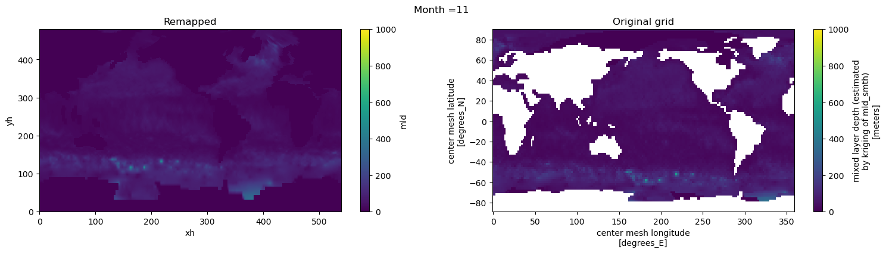
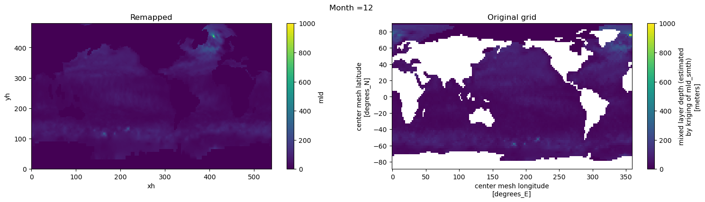

Regrid MLD from deBoyer et al (2004)#
This notebook documents the steps needed to regrid the MLD dataset to a nominal 2/3 deg MOM grid (tx2_3).
%matplotlib inline
import xarray as xr
import xesmf
import numpy as np
import datetime
import numpy as np
import matplotlib.pyplot as plt
today = datetime.date.today().strftime("%y%m%d")
print(today)
260306
fname = '../../mesh/tx2_3v3_grid.nc'
ds_out = xr.open_dataset(fname).rename({'tlon': 'lon','tlat': 'lat', 'qlon': 'lon_b','qlat': 'lat_b',})
ds_out
<xarray.Dataset> Size: 42MB
Dimensions: (ny: 480, nx: 540, nxp: 541, nyp: 481)
Dimensions without coordinates: ny, nx, nxp, nyp
Data variables: (12/20)
lon (ny, nx) float64 2MB ...
lat (ny, nx) float64 2MB ...
ulon (ny, nxp) float64 2MB ...
ulat (ny, nxp) float64 2MB ...
vlon (nyp, nx) float64 2MB ...
vlat (nyp, nx) float64 2MB ...
... ...
tarea (ny, nx) float64 2MB ...
tmask (ny, nx) float64 2MB ...
angle (ny, nx) float64 2MB ...
depth (ny, nx) float64 2MB ...
ar (ny, nx) float64 2MB ...
egs (ny, nx) float64 2MB ...
Attributes:
Description: CESM MOM6 2/3 degree grid
Author: Frank, Fred, Gustavo (gmarques@ucar.edu)
Created: 2026-03-05T14:49:28.971877
type: Glogal 2/3 degree grid fileinfile = '/glade/campaign/cgd/oce/datasets/obs/mld/deBoyer_2004/mld_DR003_c1m_reg2.0.nc'
ds_in = xr.open_dataset(infile, decode_times=False)
ds_in.mld[0,:].plot(vmin=0, vmax=1000);

# mask bad values
for t in range(len(ds_in.time)):
tmp = np.nan_to_num(ds_in.mld[t,:].values, copy=True, posinf=0, neginf=0)
ds_in['mld'][t,:,:] = tmp #.where(tmp == tmp).where(tmp>=0).where(tmp<1.0e6)
def regrid_mld(fld, ds_in, ds_out, method='bilinear'):
regrid = xesmf.Regridder(
ds_in,
ds_out,
method=method,
periodic=True,
)
fld_out = regrid(ds_in[fld])
return fld_out
ds_out = regrid_mld('mld', ds_in, ds_out).rename('mld').rename({'nx':'xh', 'ny':'yh'})
Visual inspection#
Make sure original and remapped plots look similar.
# visual inspection. Make sure original and remapped plots look similar
for t in range(len(ds_in.time)):
fig, axes = plt.subplots(nrows=1, ncols=2, figsize=(18,4))
ds_out[t,:,:].plot.pcolormesh(ax=axes[0], vmin=0,vmax=1000)
ds_in['mld'][t,:,:].where(ds_in.mask == 1).plot.pcolormesh(ax=axes[1], vmin=0,vmax=1000)
axes[0].set_title('Remapped')
axes[1].set_title('Original grid')
plt.suptitle('Month ='+ str(t+1))









ds_out.attrs['author'] = 'Gustavo Marques (gmarques@ucar.edu)'
ds_out.attrs['description'] = 'MLD using density criterion of 0.03 kg/m3 difference (de Boyer Montegut et al., JGR 2004)'
ds_out.attrs['date'] = today
ds_out.attrs['infile'] = infile
ds_out.attrs['url'] = 'https://github.com/NCAR/tx2_3/mld/deBoyer2004/'
# save
fname = 'deBoyer04_MLD_remapped_to_tx2_3v3_{}.nc'.format(today)
ds_out.to_netcdf(fname)
/glade/u/apps/opt/miniforge/envs/npl-2026a/lib/python3.13/site-packages/dask/config.py:786: FutureWarning: Dask configuration key 'allowed-failures' has been deprecated; please use 'distributed.scheduler.allowed-failures' instead
warnings.warn(